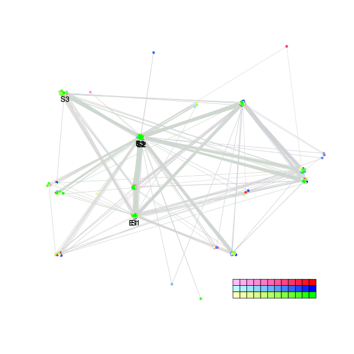
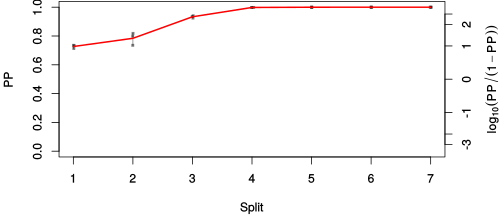
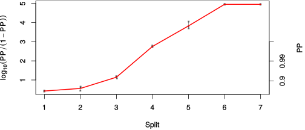

| chain # | burnin | subsample | Iterations (remaining) | command line | subdirectory | directory |
|---|---|---|---|---|---|---|
| 1 | 10000 | 1 | 90000 | /usr/local/bali-phy-3.0-beta2/bin/bali-phy cat_E6_E7_AA_red3_v2_Alpha_all4Manatees.fas -s 45643 -n cat_E6_E7_red3_v2_Alpha_all4Manatees_c1 | cat_E6_E7_red3_v2_Alpha_all4Manatees_c1-1 | /home/willemse/data/trees/BaliPhy/cat_E6_E7/red3_v2 |
| 2 | 10000 | 1 | 90000 | /usr/local/bali-phy-3.0-beta2/bin/bali-phy cat_E6_E7_AA_red3_v2_Alpha_all4Manatees.fas -s 92834 -n cat_E6_E7_red3_v2_Alpha_all4Manatees_c2 | cat_E6_E7_red3_v2_Alpha_all4Manatees_c2-1 | /home/willemse/data/trees/BaliPhy/cat_E6_E7/red3_v2 |
| 3 | 10000 | 1 | 90000 | /usr/local/bali-phy-3.0-beta2/bin/bali-phy cat_E6_E7_AA_red3_v2_Alpha_all4Manatees.fas -s 72201 -n cat_E6_E7_red3_v2_Alpha_all4Manatees_c3 | cat_E6_E7_red3_v2_Alpha_all4Manatees_c3-1 | /home/willemse/data/trees/BaliPhy/cat_E6_E7/red3_v2 |
| P(data|M) = -5260.906 +- 0.512 | Complete sample: 101 topologies | 95% Bayesian credible interval: 13 topologies |
Phylogeny Distribution

| Partition support: Summary |
| Partition support graph: SVG |
{kind=link}
| 50% consensus | Newick (+PP) | SVG | |||||
| 66% consensus | Newick (+PP) | SVG | |||||
| 80% consensus | Newick (+PP) | SVG | |||||
| 90% consensus | Newick (+PP) | SVG | |||||
| 95% consensus | Newick (+PP) | SVG | |||||
| 99% consensus | Newick (+PP) | SVG | |||||
| 100% consensus | Newick (+PP) | SVG | |||||
| MAP | Newick (+PP) | SVG | |||||
| greedy | Newick (+PP) | SVG |
{kind=link}
{kind=link}
{kind=link}
{kind=link}
{kind=link}
{kind=link}
{kind=link}
{kind=link}
Alignment Distribution
Partition 1
| Diff | Min. %identity | # Sites | Constant | Informative | ||||
|---|---|---|---|---|---|---|---|---|
| Initial | FASTA | HTML | Diff | 0.837% | 272 | 1 (0.368%) | 229 (84.2%) | |
| Best (WPD) | FASTA | HTML | AU | 11.2% | 387 | 14 (3.62%) | 219 (56.6%) |
Mixing
{kind=link}
{kind=link}
| burnin (scalar) | ESS (scalar) | ESS (partition) | ASDSF | MSDSF | PSRF-CI80% | PSRF-RCF |
|---|---|---|---|---|---|---|
| 880 | 1221 | 600.738 | 0.012 | 0.043 | 1.002 | 1.008 |
Projection of RF distances for the first 3 chains3D | Variation of split PPs across chains |
Scalar variables
| Statistic | Median | 95% BCI | ACT | ESS | burnin | PSRF-CI80% | PSRF-RCF |
|---|---|---|---|---|---|---|---|
| prior | -315.5 | (-355, -280.2) | 71.58 | 3772 | 402 | 1 | 0.9936 |
| prior_A1 | -308.1 | (-346.4, -275.3) | 66.61 | 4053 | 261 | 0.999 | 0.9909 |
| likelihood | -5239 | (-5261, -5218) | 221.1 | 1221 | 876 | 1.002 | 0.9912 |
| logp | -5554 | (-5589, -5524) | 181.4 | 1488 | 880 | 1.001 | 1.004 |
| Heat.beta | 1 | ||||||
| Scale1 | 5.585 | (3.021, 9.124) | 1.016 | 265857 | 190 | 1 | 0.9985 |
| S1.F.pi.A | 0.05582 | (0.04438, 0.06786) | 7.849 | 34397 | 559 | 1 | 0.9997 |
| S1.F.pi.R | 0.07007 | (0.05704, 0.08442) | 8.14 | 33171 | 192 | 0.9999 | 1.002 |
| S1.F.pi.N | 0.03077 | (0.02265, 0.03935) | 7.931 | 34042 | 365 | 0.9999 | 1.004 |
| S1.F.pi.D | 0.05922 | (0.04724, 0.07259) | 8.423 | 32056 | 304 | 1 | 0.9997 |
| S1.F.pi.C | 0.05174 | (0.03813, 0.06575) | 8.187 | 32981 | 280 | 1 | 1.002 |
| S1.F.pi.Q | 0.04589 | (0.03647, 0.05587) | 8.387 | 32194 | 278 | 0.9997 | 0.9988 |
| S1.F.pi.E | 0.0671 | (0.05445, 0.08043) | 9.511 | 28389 | 402 | 0.9994 | 0.991 |
| S1.F.pi.G | 0.06865 | (0.0534, 0.08483) | 8.33 | 32413 | 432 | 1 | 1.008 |
| S1.F.pi.H | 0.03573 | (0.02651, 0.0456) | 7.908 | 34140 | 524 | 1 | 0.9969 |
| S1.F.pi.I | 0.04513 | (0.03529, 0.05576) | 8.515 | 31710 | 680 | 1 | 0.9972 |
| S1.F.pi.L | 0.111 | (0.09304, 0.1294) | 8.879 | 30410 | 481 | 1.001 | 0.9908 |
| S1.F.pi.K | 0.03612 | (0.0276, 0.04579) | 9.022 | 29927 | 286 | 0.9999 | 1 |
| S1.F.pi.M | 0.007941 | (0.004317, 0.01238) | 7.98 | 33834 | 435 | 1 | 1.001 |
| S1.F.pi.F | 0.03836 | (0.02813, 0.04893) | 7.89 | 34220 | 446 | 1 | 1.007 |
| S1.F.pi.P | 0.03853 | (0.02768, 0.05065) | 8.641 | 31247 | 396 | 1 | 1 |
| S1.F.pi.S | 0.04751 | (0.03747, 0.05801) | 7.979 | 33841 | 334 | 0.9999 | 1.001 |
| S1.F.pi.T | 0.05782 | (0.04591, 0.0699) | 7.976 | 33852 | 444 | 0.9998 | 1.003 |
| S1.F.pi.W | 0.02221 | (0.01415, 0.03141) | 8.084 | 33397 | 258 | 0.9998 | 1.001 |
| S1.F.pi.Y | 0.0474 | (0.03629, 0.0594) | 7.86 | 34350 | 481 | 1 | 0.9974 |
| S1.F.pi.V | 0.05874 | (0.04732, 0.07085) | 8.082 | 33407 | 327 | 0.9998 | 0.9974 |
| I1.RS07.meanIndelLengthMinus1 | 7.66 | (4.909, 11.24) | 12.05 | 22403 | 119 | 1 | 0.9978 |
| I1.RS07.logLambda | -4.472 | (-4.877, -4.092) | 10.22 | 26421 | 184 | 0.9997 | 1 |
| |A1| | 371 | (352, 393) | 56.96 | 4740 | 130 | 0.9231 | 0.9907 |
| #indels1 | 34 | (28, 38) | 65.81 | 4103 | 226 | 0.8333 | 0.9912 |
| |indels1| | 272 | (239, 315) | 65.83 | 4101 | 217 | 0.9804 | 0.9971 |
| #substs1 | 966 | (948, 983) | 151.7 | 1779 | 367 | 0.9545 | 0.9954 |
| Scale1*|T| | 6.969 | (6.448, 7.512) | 3.154 | 85613 | 293 | 0.9998 | 0.9999 |
| |A| | 371 | (352, 393) | 56.96 | 4740 | 130 | 0.9231 | 0.9907 |
| #indels | 34 | (28, 38) | 65.81 | 4103 | 226 | 0.8333 | 0.9912 |
| |indels| | 272 | (239, 315) | 65.83 | 4101 | 217 | 0.9804 | 0.9971 |
| #substs | 966 | (948, 983) | 151.7 | 1779 | 367 | 0.9545 | 0.9954 |
| |T| | 1.249 | (0.6636, 1.986) | 1 | 270003 | 190 | 1 | 0.9984 |